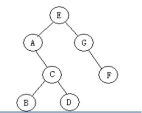
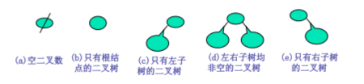
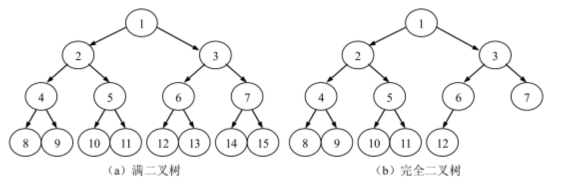
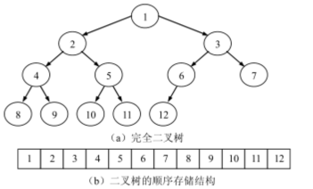
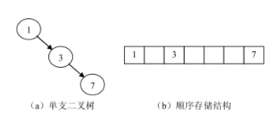
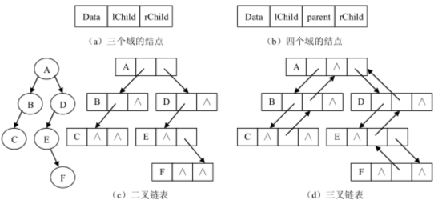

二叉树：
每个结点的度均不超过 2 的有序树，称为 二叉树（binary tree） 。
与树的递归定义类似，二叉树的递归定义如下：
二叉树或者是一棵空树，或者是一棵由一个根结点和两棵互不相交的分别称为根的左子树和右子树的子树所组成的非空树。

由以上定义可以看出，
二叉树中每个结点的孩子数只能是 0、1 或 2 个，并且每个孩子都有左右之分。
位于左边的孩子称为左孩子，位于右边的孩子称为右孩子；
以左孩子为根的子树称为左子树，以右孩子为根的子树称为右子树。

满二叉树：
高度为k并且有 2k+1 -1 个结点的二叉树。
在满二叉树中，每层结点都达到最大数，即每层结点都是满的，因此称为满二叉树。
完全二叉树：
若在一棵满二叉树中，在最下层从最右侧起去掉相邻的若干叶子结点，得到的二叉树即为完全二叉树。

满二叉树必为完全二叉树，而完全二叉树不一定是满二叉树
·
二叉树的性质
性质1： 在二叉树的第i层上最多有 2 i-1 个结点（根是第一层）
性质2：高度为h的二叉树至多有 2h -1 个结点
性质3： 对任何一棵二叉树T，如果其终端结点数为n0 ，度为 2 的结点数为n2 ，则n0 = n2+ 1
性质4：有 n 个结点的完全二叉树的高度为[log2n]+1，其中[log2n]是向下取整
性质5： 含有 n≥1 个结点的二叉树的高度至多为 n-1；高度至少为[log2n]+1，其中[log2n]是向下取整
性质6：如果对一棵有n个结点的完全二叉树的结点进行编号，则对任一结点i(1≤i ≤n)，有
⑴ 如果 i=1，则结点 i 是二叉树的根，无双亲；如果 i>1，则其双亲结点 PARENT(i)是结点 ⎣ i/2⎦
⑵ 如果 2i>n，则结点 i 无左孩子；否则其左孩子是结点 2i。
⑶ 如果 2i+1>n，则结点 i 无右孩子；否则其右孩子是结点 2i+1。
二叉树的存储结构
二叉树的存储结构有两种：顺序存储结构和链式存储结构。
顺序存储结构
对于满二叉树和完全二叉树来说，可以将其数据元素逐层存放到一组连续的存储单元中，如图所示。
用一维数组来实现顺序存储结构时，将二叉树中编号为 i 的结点存放到数组中的第 i 个分量中。
如此根据二叉树性质，可以得到结点 i 的父结点、左右孩子结点分别存放在 、2i 以及 2i+1 分量中

这种存储方式对于满二叉树和完全二叉树是非常合适也是高效方便的。
因为满二叉树和完全二叉树采用顺序存储结构既不浪费空间，也可以根据公式很快的确定结点之间的关系。
但是对于一般的二叉树而言，必须用“虚结点”将一棵二叉树补成一棵完全二叉树来存储，
否则无法确定结点之间的前驱后续关系，但是这样一来就会造成空间的浪费

链式存储结构
设计不同的结点结构可构成不同的链式存储结构。
在二叉树中每个结点都有两个孩子，则可以设计每个结点至少包括 3 个域：数据域、左孩子域和右孩子域。
数据域存放数据元素，左孩子域存放指向左孩子结点的指针，右孩子域存放指向右孩子结点的指针。如图 （a）所示。
利用此结点结构得到的二叉树存储结构称为二叉链表。
为了方便找到父结点，可以在上述结点结构中增加一个指针域，指向结点的父结点。如图 （b）所示。
采用此结点结构得到的二叉树存储结构称为三叉链表。
